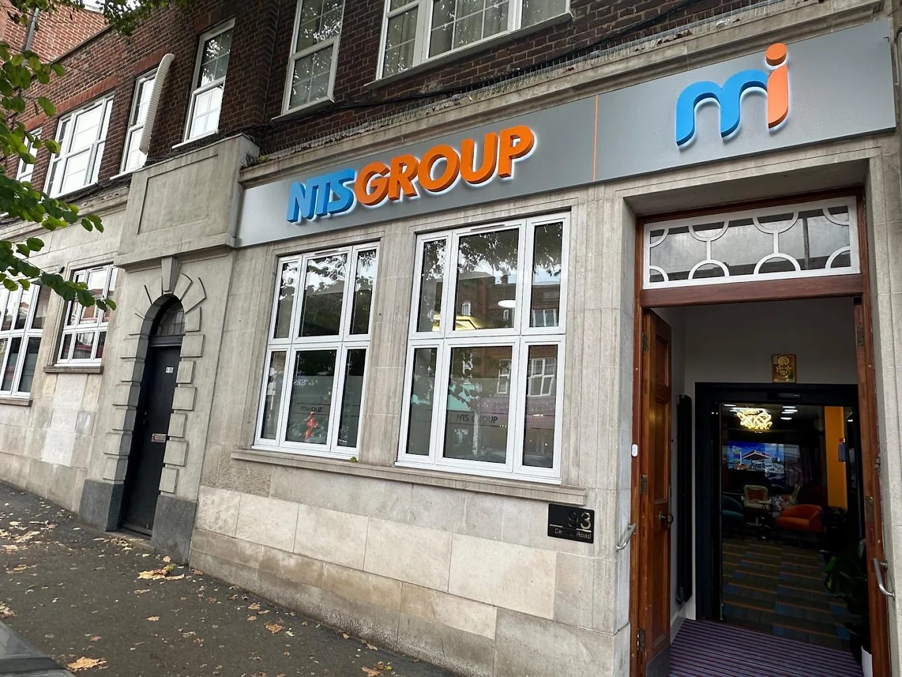
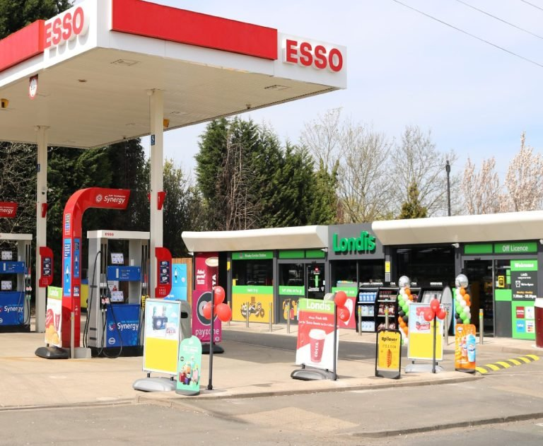
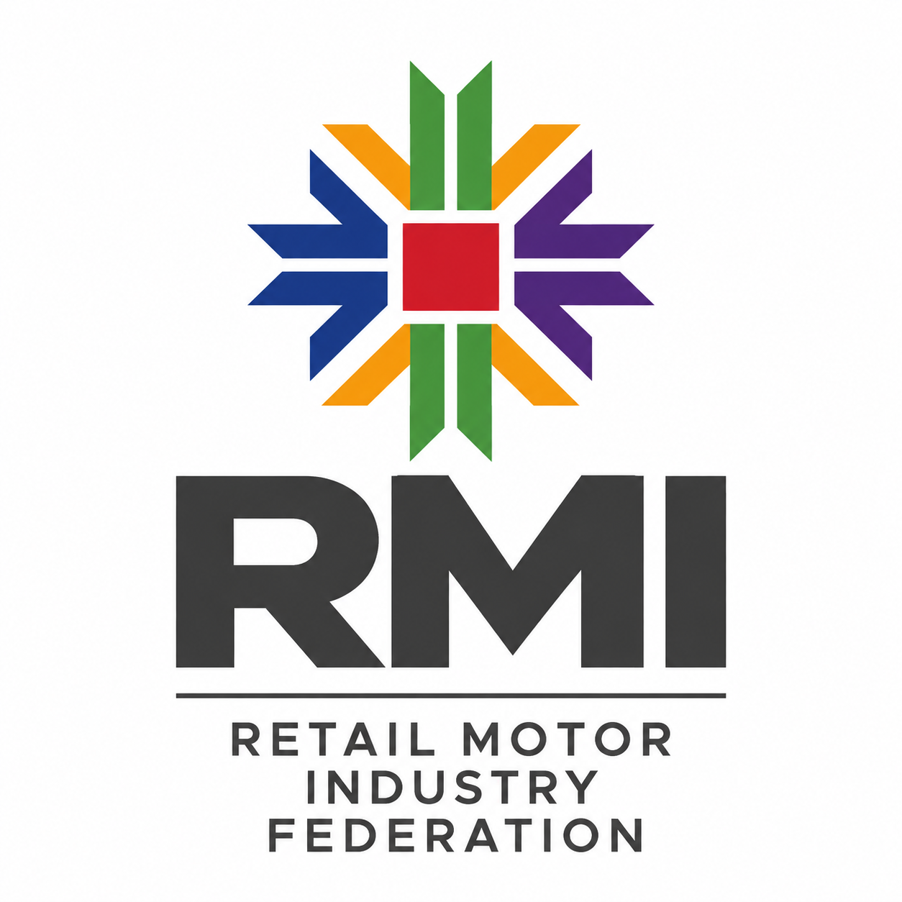

Independent by Nature. Built on Experience.
Decades of industry experience behind a growing independent forecourt and convenience business.

NTS Group at a glance
1993
Where the story began
29 sites
Portfolio by 2026
Top 50 Indie
Recognised by Forecourt Trader
The NTS Journey
1993 — The beginning of NTS Group. Nalliah Thayaparan began in the forecourt industry in 1993 as a commission operator, managing multiple sites for leading UK independent forecourt companies. This marked the beginning of NTS Group and laid the foundations for its future growth.
1996 — A New Era of Growth. In 1996, Nalliah Thayaparan expanded into convenience retail, opening his first Mini-Store in London under the Five Stars Group. This marked an important expansion of NTS Group’s operations beyond forecourt management.
2012 — A New Identity, A Bigger Vision. In March 2012, NTS Group was formally established, building on the foundations laid since 1993. With a vision to grow the business further, the Group set its sights on acquiring its own forecourt sites and expanding its presence across the UK.
2013 — From Ambition to Ownership. In May 2013, NTS acquired its first company-owned forecourt in Petersfield, turning its ambition for ownership into reality. This landmark acquisition marked the beginning of NTS’s own forecourt network and set the stage for continued investment, growth and expansion across the UK.
2020 — Strength in Scale. By 2020, NTS had grown to a network of 15 forecourts, with operations extending across England and Wales. Reaching this milestone reflected years of steady investment and expansion, strengthening NTS’s position as a growing independent forecourt operator and setting the foundation for the next phase of its journey.
2026 — A New Milestone, A Growing Future. NTS reached another significant milestone with the opening of its 29th outlet, continuing the Group’s strong growth across the UK. Alongside its expanding forecourt network, Miwayz represents the next evolution of NTS’s convenience retail offering, introducing a fresh identity and modern approach to the customer experience. With continued investment, new developments and further expansion ahead, NTS continues to build for the future.

A growing independent network.
From a single forecourt acquisition in 2013, NTS Group has grown into an independent network spanning England and Wales, with sites across London, the South East, East Anglia, the Midlands, the South West and Wales.
From one site to 29.
More than a petrol station.
Fuel
NTS Group operates forecourts under recognised fuel brands, including Shell, Esso, BP, JET and Texaco.
Convenience Retail
Many NTS Group locations incorporate Londis-branded convenience stores, offering fresh produce, food to go, Costa Express, F’real smoothies and Fanta Ice Blasts.
Everyday Services
Depending on the location, customers can also access air machines, ATMs, jet washes, vacuum facilities and parcel services including InPost, Amazon and DPD, alongside PayPoint, National Lottery and mobile top-ups.
How we work
Straightforward
We keep things practical, clear and easy to understand.
Dependable
Consistent standards customers, colleagues and partners can rely on.
Long-term
We make decisions that strengthen the business for years to come.
Recognised as a Top Indie.
#14
Forecourt Trader Top 50 Indies — 2026
NTS Group is ranked 14th in the 2026 Forecourt Trader Top 50 Indies, placing the Group among the UK’s leading independent forecourt operators.
Moving up from 15th place in 2025 to 14th in 2026, the latest ranking marks another step forward for NTS Group and reflects its continued progression within the UK independent forecourt sector.

Committed to Retail Excellence
NTS Group is an active member of the Retail Motor Industry Federation (RMI), reflecting our commitment to maintaining high standards and best practice across our retail operations.
Supporting the communities around its sites.
Supporting the NHS and emergency services
During the COVID-19 pandemic, NTS Group introduced a 10% discount on fuel and shop purchases for NHS staff and UK emergency-services personnel, recognising their work during the pandemic.
Serving local communities
NTS sites are designed around the everyday needs of the people they serve. From groceries and food-to-go to parcel services and everyday essentials, each location aims to provide a convenient and reliable service at the heart of its local community.
Investing in our sites
NTS Group invested approximately £300,000 in the redevelopment of its Canvey Island site. The refurbishment introduced improved facilities, an expanded food-to-go range and modern in-store technology, strengthening the site’s offering for the local community.
More than forecourts.
NTS Group includes businesses that operate alongside our core forecourt and convenience estate.
The vision behind NTS Group
At the heart of NTS Group is a hands-on, entrepreneurial approach to business. Nalliah Thayaparan has focused on identifying opportunities with long-term potential, investing in sites and building strong industry partnerships — principles that continue to shape the Group’s direction today.
“Growth has never been about simply adding more sites. It’s about building businesses that serve their communities, investing for the long term and doing things the right way.”Nalliah Thayaparan CEO & Founder
About NTS Group
NTS Group is an independent UK forecourt operator founded by Nalliah Thayaparan in 2012.
Beginning with its first forecourt acquisition in Petersfield in 2013, the company has expanded its portfolio across England and Wales, reaching 15 sites by 2020, 23 sites by 2024 and 29 sites by 2026.
Its network combines fuel retail with convenience stores and a range of customer services, operating with fuel brands including Shell, Esso, BP, JET and Texaco, alongside Londis-branded convenience stores at many locations.
The company's development has included acquisitions, store conversions and adaptations to changing market conditions, while maintaining a focus on serving the communities around its sites.
Still growing.
The UK forecourt industry continues to change, with operators responding to developments including electric-vehicle charging, changing consumer expectations and the evolution of convenience retail. For NTS Group, the next stage of its story will involve continuing to operate and develop its network while adapting its sites and services to a changing market.